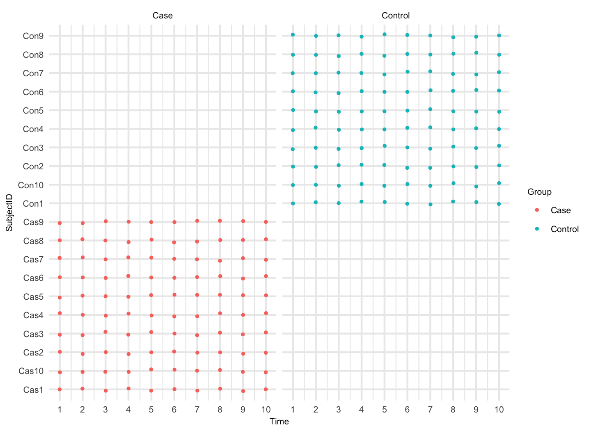

Workflow : The Block Bootstrap Method for Longitudinal Microbiome Data
Pratheepa Jeganathan
Department of Statistics, Stanford Universityjpratheepa31@gmail.com
2019-01-22
bootLong.RmdMicrobiome data consist of the frequency of higher resolution amplicon sequence variants (ASVs) in each biological sample, clinical and demographic information about biological samples, phylogenetic tree, taxonomy table. Our bootLong package requires (phyloseq)[https://joey711.github.io/phyloseq/] for the entire workflow.
In this workflow, we provide differential abundance analysis for longitudinal microbiome data. In addition, we provide statistical tools to explore the sampling schedule and within-subject dependence for each ASV.
The manuscript is under revision and it’s available in (stat arXiv) [https://arxiv.org/abs/1809.01832].
Install R and RStudio. Open this Rmd file in RStudio. Then run the following code to install all required packages.
Install packages:
pkgs <- c("ggplot2","dplyr","tidyr",
"phyloseq", "limma","ashr",
"gridExtra","MASS",
"geeM", "BiocParallel",
"doParallel", "parallel","magrittr",
"joineR", "DESeq2", "grid", "devtools")
BiocManager::install(setdiff(pkgs, installed.packages()), update = TRUE)
#devtools::install_github("PratheepaJ/bootLong")load packages:
library(ggplot2)
library(dplyr)
library(tidyr)
library(phyloseq)
library(limma)
library(ashr)
library(gridExtra)
library(MASS)
library(geeM)
library(BiocParallel)
library(doParallel)
library(parallel)
library(magrittr)
library(joineR)
library(DESeq2)
library(grid)
library(bootLong)
# library(R.utils)
# devtools::load_all(".")Set the computational resources: we need to specify the number of cores for subsampling method and block bootstrap method.
ncores = as.integer(Sys.getenv("SLURM_NTASKS"))
if(is.na(ncores)) ncores <- parallel::detectCores()
ncores## [1] 4setting_name <- "Sim"lC1 <- params$lC1
lC1## [1] 2lC2 <- params$lC2
lC2## [1] 2Summary
After loading the phyloseq, we recommend to check the variable names and some summary for each variable in the sample table. In the example data, we have SubjectID, SampleID, Time, Covariates (Preterm).
names(sample_data(ps))## [1] "SubjectID" "Group" "SampleID" "Time"table(sample_data(ps)$SubjectID, sample_data(ps)$Time)##
## 1 2 3 4 5 6 7 8 9 10
## Cas1 1 1 1 1 1 1 1 1 1 1
## Cas10 1 1 1 1 1 1 1 1 1 1
## Cas2 1 1 1 1 1 1 1 1 1 1
## Cas3 1 1 1 1 1 1 1 1 1 1
## Cas4 1 1 1 1 1 1 1 1 1 1
## Cas5 1 1 1 1 1 1 1 1 1 1
## Cas6 1 1 1 1 1 1 1 1 1 1
## Cas7 1 1 1 1 1 1 1 1 1 1
## Cas8 1 1 1 1 1 1 1 1 1 1
## Cas9 1 1 1 1 1 1 1 1 1 1
## Con1 1 1 1 1 1 1 1 1 1 1
## Con10 1 1 1 1 1 1 1 1 1 1
## Con2 1 1 1 1 1 1 1 1 1 1
## Con3 1 1 1 1 1 1 1 1 1 1
## Con4 1 1 1 1 1 1 1 1 1 1
## Con5 1 1 1 1 1 1 1 1 1 1
## Con6 1 1 1 1 1 1 1 1 1 1
## Con7 1 1 1 1 1 1 1 1 1 1
## Con8 1 1 1 1 1 1 1 1 1 1
## Con9 1 1 1 1 1 1 1 1 1 1Sampling schedule
We can visualize the sampling schedule for each subject and facet by different conditions. This plot can be modified using your preferred theme, legends, etc. For example, set.theme can be changed to have point size 10, legend title can be changed from Preterm to Group, levels of Preterm can be changed to Term and Preterm, etc.
The sampling schedlue will be used to choose the percentage of subsampling to find the optimal block szie.
theme_set(theme_bw())
set.theme <- theme_update(panel.border = element_blank(),
panel.grid = element_line(size = .8),
axis.ticks = element_blank(),
legend.title = element_text(size = 8),
legend.text = element_text(size = 8),
axis.text = element_text(size = 8),
axis.title = element_text(size = 8),
strip.background = element_blank(),
strip.text = element_text(size = 8),
legend.key = element_blank(),
plot.title = element_text(hjust = 0.5))
sample_data(ps)$Group <- as.factor(sample_data(ps)$Group)
p <- plotSamplingSchedule(ps, time_var = "Time", subjectID_var = "SubjectID", main_factor = "Group", theme_manual = set.theme)
p <- p + scale_color_discrete(name ="Group",breaks=c("Case", "Control"),labels=c("Case", "Control"))
p
#ggsave("./Example_sampling_schedule.eps", plot = p, width = 8, height = 5.5)In order to make at least 5 overlapping subsamples, we should choose \(\omega = .6\) (\(\omega\) cannot be more than .6). The maximum repeated observations from each subject for the subsample is \(10 \times .6 = 6\). Thus, the number of overlapping subsamples \(W = 10 - 6 + 1 = 5\).
Preprocessing
Preprocessing will help to reduce unwanted noise.
Filter ASVs: for example, we remove ASVs with less than 10% prevalence in all samples.
Before filtering, we will check whether ASVs are on rows and samples are on columns.
if (dim(otu_table(ps))[2] != nsamples(ps)) {
otu_table(ps) <- t(otu_table(ps))
}
threshold <- .1
keep_asv <- apply(otu_table(ps), 1, function(x){
sum(x > 0)
}) > threshold*nsamples(ps)
ps <- prune_taxa(keep_asv, ps)
### Better to save the ps after all filtering
# fileN <- paste0("ps", setting_name, ".rds")
# saveRDS(ps, fileN)Exploratory analysis
Here we provide tools to explore the within-subject dependence. These tools will be used to decide the initial block size for the subsampling method.
- Extract the common legend [https://github.com/hadley/ggplot2/wiki/Share-a-legend-between-two-ggplot2-graphs]
plot_common_legend <- function(p){
ggplot_feature = ggplot_gtable(ggplot_build(p))
le <- which(sapply(ggplot_feature$grobs, function(x) x$name) == "guide-box")
l <- ggplot_feature$grobs[[le]]
return(l)
}PACF
Partial autocorrelataion (PACF) at lag \(h\) measures the correlation between repeated observations that are seperated by \(h\) time units after adjusting for the correlation at shorter lags.
- If you prefer to name strain number with the taxonomy (Species/Genus/Family/Order…) selected and be consistent with all the results, run the following with appropriate changes.
We use
psTransform()to get phyloseq objects with transformed count table and residuals after fitting a negative-binomial regression.We choose top six abundance ASVs (based on the total transformed abundance) to visualize the dependence within-subject. We can choose different ASVs by changing
starttaxaandendtaxaarguments inlongPACFMultiple().
ps.tr <- psTransform(ps, main_factor = "Group")
p.all <- longPACFMultiple(pstr = ps.tr[[1]],
psres = ps.tr[[1]],
main_factor = "Group",
time_var = "Time",
starttaxa = 1,
endtaxa = 6,
taxlevel = "Genus")
# Change the legend labels
p.all <- lapply(p.all, function(x){
x + scale_fill_discrete(name ="Group", breaks=c("Case", "Control"), labels=c("Case", "Control"))
})
# extract the common legend for all taxa
leg <- plot_common_legend(p.all[[1]])
plist <- lapply(p.all,function(x){
x + theme(legend.position = "none")
})
# p <- grid.arrange(arrangeGrob(grobs=plist,nrow=2,widths=c(3,3,3)),
# leg,
# ncol=2,
# widths=c(10,2))
# ggsave("./Example_PAC.eps",plot=p,width = 8,height = 5.5)
grid.arrange(arrangeGrob(grobs = plist, nrow=2, widths=c(3,3,3)),
leg,
ncol = 2,
widths = c(10, 2))
The largest spike (|PAC| > .25) is observed at lag-1 for both term and preterm in all ASVs. The spike at lag-2 is closer to .25 for ASV_30 and ASV_27 in case. The spike decreases at lag-3 and then, increases at lag-4 for all ASVs. Thus, We can assume that five consecutive observations make a block. We will choose an inital block size of 5.
We can also check the lag-plot for each ASV and it is interpreted as follows:
-
For each ASV, we plot transformed abundances at different lags. The lag-plot is interpreted as follows:
- lack of autocorrelation is implied by the absence of a pattern in the lag plot,
- weak to moderate autocorrelation is implied by less clustering of points along the diagonal, and
- high autocorrelation is implied by tight clustering of points along the diagonal.
longitudinal data lag-plots
Let us check the lag-plot for ASV_30. We need to specify the ASV index in the ‘taxon’ option. In this example, ‘taxon = 30’.
lags <- as.list(seq(1, 8))
p.lags <- lapply(lags,function(x){
longLagPlot(ps.tr[[2]],
main_factor = "Group",
time_var = "Time",
taxon = 30,
x,
taxlevel = "Genus")})
# Change the legend labels
p.lags <- lapply(p.lags, function(x){
x + scale_color_discrete(name = "Group", breaks = c("Case", "Control"), labels = c("Case", "Control"))
})
leg <- plot_common_legend(p.lags[[1]])
plist <- lapply(p.lags,function(x){
x+theme(legend.position = "none")
})
# p <- grid.arrange(arrangeGrob(grobs=plist,nrow=2,widths=c(3,3,3,3)),
# leg,
# ncol=2,
# widths=c(10,2))
#
# ggsave("./Example_lag_plot.eps",plot=p,width = 8,height = 5.5)
grid.arrange(arrangeGrob(grobs = plist, nrow = 2, widths = c(3, 3, 3, 3)),
leg,
ncol = 2,
widths = c(10, 2), top = textGrob("ASV 30", gp = gpar(fontsize = 8, font = 3)))
For ASV 30, we observe that points are almost on the diagonal at lag-1. Then, points are less clustering along the diagonal at lag-3. We can either choose an initial block size of 4 according to lag-plot or 5 accroding to PAC plots. However, we visualized a lag-plot for one ASV but we visualized PAC for six ASVs. Thus, we will still choose \(l_{I} = 5.\)
In practice, we can choose initial block size using PAC plots. If there are spurious effects at larger lags and suggesting to choose BIG initial block size, we can diagnose those using lag-plot for particular ASV. There might be a spurious higher autocorrelation at larger lags due to a small number of observations or abundances close to zero.
Correlogram
In practice, we can also choose \(l_{I}\) using correlogram. First, we use the variance-stabilizing transformation on the original abundance table. Then, for each ASV, we compute the average transformed abundance at each time point. Finally, we plot within-subject autocorrelation for top six abundances ASVs. These top six ASVs are selected according to the sum of transformed abundances for each ASV. Using the autocorrelation plots, we consider the first occurrence of a lag with sufficiently close to zero autocorrelation as initial block size \(l_{I}\). There might be a spurious higher autocorrelation at larger lags due to a small number of observations or abundances close to zero.
p.all <- longCorreloMultiple(ps.tr[[1]],
ps.tr[[1]],
main_factor = "Group",
time_var = "Time",
starttaxa = 1,
endtaxa = 6,
taxlevel = "Genus")
# Change the legend labels
p.all <- lapply(p.all, function(x){
x + scale_fill_discrete(name ="Group",breaks=c("Case", "Control"),labels=c("Case", "Control"))
})
# extract the common legend for all taxa
leg <- plot_common_legend(p.all[[1]])
plist <- lapply(p.all,function(x){
x + theme(legend.position = "none")
})
# p <- grid.arrange(arrangeGrob(grobs=plist,nrow=2,widths=c(3,3,3)),
# leg,
# ncol=2,
# widths=c(10,2))
# ggsave("./Example_correlogram.eps",plot=p,width = 8,height = 5.5)
grid.arrange(arrangeGrob(grobs = plist, nrow = 2, widths = c(3, 3, 3)),
leg,
ncol = 2,
widths=c(10, 2))
We observe that the correlogram tends to be sufficiently zero at lag-4 for almost all the ASVs. Therefore, the initial block size is 5.
All other exploratory tools suggest an inital block size of 5.
Now we have chosen the initial parameters for the subsampling method. \(\omega = .6\) and \(l_{I} =5\).
The block bootstrap method
First, we identify the opitmal block size for the subsample. We use the initial block size 5 (\(l_{I} = 5\)) and subsampling proportion \(\omega = .6\) to identify the opitmal block size.
Subsampling
- Compute \(\psi(q,l_{I})\) and \(T_{i}\left(q, l_{I}\right)\) using the initial block size and the full data.
#####Note: With 4 cores, this will take almost 18 hours
R <- 200
RR <- 50
main_factor <- "Group"
time_var <- "Time"
subjectID_var = "SubjectID"
sampleID_var = "SampleID"
lI <- 5
omega <- .6
system.time(
mse.results <- bootLongSubsampling(ps = ps,
main_factor = main_factor,
time_var = time_var,
subjectID_var = subjectID_var,
sampleID_var = sampleID_var,
lI = lI,
R = R,
RR = RR,
omega = omega,
lC1 = lC1, lC2 = lC2,
ncores = ncores, psi.hat.lI = FALSE, psi.hat.lI.val = NULL, compStatParallel = FALSE)
)
fileN <- paste0("./psi.hat.lI_", setting_name,".rds")
saveRDS(mse.results, fileN) - We can run the following code parallel for each block sizes (lC1 = lC2) if we have already saved
psi.hat.lI.- Save the mse results for each lC1
Use compStatParallel = TRUE if you have more ASVs than R.
##### NOTE: With 4 cores, this will take almost 71 hours
# fileN <- paste0("ps", setting_name, ".rds")
# ps <- readRDS(fileN)
fileN <- paste0("./psi.hat.lI_", setting_name,".rds")
psi.hat.lI.val <- readRDS(fileN)
R <- 200
RR <- 50
main_factor <- "Group"
time_var <- "Time"
subjectID_var = "SubjectID"
sampleID_var = "SampleID"
lI <- 5
omega <- .6
system.time(
mse.results <- bootLongSubsampling(ps = ps,
main_factor = main_factor,
time_var = time_var,
subjectID_var = subjectID_var,
sampleID_var = sampleID_var,
lI = lI,
R = R,
RR = RR,
omega = omega,
lC1 = lC1, lC2 = lC2,
ncores = ncores, psi.hat.lI = TRUE, psi.hat.lI.val = psi.hat.lI.val, compStatParallel = FALSE)
)
fileN <- paste0("MSE_", setting_name, "_lC1", lC1,".rds")
saveRDS(mse.results, fileN)Inspect MSE plot
We combine the results for all the possible \(lC1\). In this example, \(lC1 = 2, 3, 4\)
MSE.all <- list()
for(lC1 in 2:4){
filename <- paste0("MSE_",setting_name,"_lC1", lC1,".rds")
MSE.all[(lC1-1)] <- readRDS(filename)
}
fileN <- paste0("MSE_",setting_name,".rds")
saveRDS(MSE.all, fileN)Find the optimal block size for the subsample (l_{}) using MSE plot.
Find the optimal block size for the original data using the formula.
\[l_{o} = \left(\frac{1}{\omega}\right)^{1/5}l_{\omega}\].
lC1 <- 2
omega <- .6
fileN <- paste0("MSE_",setting_name,".rds")
mse.results <- readRDS(fileN)
blks <- length(mse.results)
mse <- list()
for(i in 1:blks){
mse[[i]] <- mse.results[[i]]$MSE_i
}
mse.avg <- lapply(mse,function(x){mean(x, na.rm=T)})
mse.sum <- lapply(mse,function(x){sum(x, na.rm=T)})
mse <- unlist(mse.sum)
lblk <- seq(lC1, (length(mse)+1), by=1)
lblk.f <- as.factor(lblk)
dfp <- data.frame(mse = mse,lblk = lblk.f)
l.omega <- lblk[mse==min(mse)]
l.omega
l.opt <- round((100/(omega*100))^(1/5)*l.omega, digits = 0)
l.opt
p.mse <- ggplot(dfp, aes(x=lblk, y=mse, group=1))+
geom_point()+
geom_line()+
xlab("block size")+
ylab("Mean squared error")+
ggtitle(paste0("MSE for ", setting_name, " ", omega*100,"%"," subsample")) +
theme(plot.title = element_text(hjust = 0.5))
p.mse
fileN <- paste0("MSE_", setting_name, ".eps")
ggsave(fileN, plot = p.mse, width = 8, height = 5.5)Run the block bootstrap method with the optimal block size \(l_{o}\)
Finally, we run the block bootstrap method with the optimal block size for differential abundance analysis.
#### Note: With 4 cores, this will take 17 hours
R <- 200
RR <- 50
main_factor <- "Group"
time_var <- "Time"
subjectID_var = "SubjectID"
sampleID_var = "SampleID"
sample_data(ps)$Group <- factor(sample_data(ps)$Group)
sample_data(ps)$Group <- relevel(sample_data(ps)$Group, ref = "Control")
system.time(
MBB.all <- bootLongMethod(ps,
main_factor = main_factor,
time_var = time_var,
sampleID_var = sampleID_var,
subjectID_var = subjectID_var,
b = l.opt,
R = R,
RR = RR, FDR = .05, compStatParallel = FALSE)
)
fileN <- paste0("MBB_",setting_name,".rds")
saveRDS(MBB.all, fileN)Inspect the MBB results
We can make a summary of differential abundance ASV.
fileN <- paste0("ps", setting_name, ".rds")
ps <- readRDS(fileN)
FDR <- .05
taxalevel <- "Genus"
fileN <- paste0("MBB_",setting_name,".rds")
boot.res.all <- readRDS(fileN) # list("summary", "beta.hat", "beta.hat.star", "beta.hat.star.star", "T.obs")
summ <- boot.res.all$summary
### add strain number to interested taxonomy same as in EDA
tax_table(ps)[, taxalevel] <- paste0(tax_table(ps)[, taxalevel],"_st_",seq(1, ntaxa(ps)))
### if we change FDR, wee need to adjust the confidence interval
T.stars.and.obs <- boot.res.all$beta.hat.star
lcl <- apply(T.stars.and.obs, 1, FUN=function(x){
quantile(x, probs=FDR/2, na.rm=TRUE)
})
ucl <- apply(T.stars.and.obs, 1, FUN=function(x){
quantile(x, probs=(1-FDR/2), na.rm=TRUE)
})
summ$lcl <- lcl
summ$ucl <- ucl
summ.filt.FDR <- dplyr::filter(summ, pvalue.adj <= FDR)
summ.filt.FDR <- dplyr::select(summ.filt.FDR, one_of("ASV","stat","pvalue.adj","lcl","ucl"))
summ.filt.FDR <- dplyr::filter(summ.filt.FDR, !is.na(pvalue.adj))
summ.filt.FDR <- dplyr::arrange(summ.filt.FDR, desc(stat))
### To save the results
summ.filt.FDR$stat <- round(summ.filt.FDR$stat, digits = 2)
summ.filt.FDR$pvalue.adj <- round(summ.filt.FDR$pvalue.adj, digits = 4)
summ.filt.FDR$pvalue.adj[which(summ.filt.FDR$pvalue.adj==0)] <- "<.0001"
summ.filt.FDR$lcl <- round(summ.filt.FDR$lcl, digits = 2)
summ.filt.FDR$ucl <- round(summ.filt.FDR$ucl, digits = 2)
df.mbb <- data.frame(Taxa = summ.filt.FDR$ASV, betahat = summ.filt.FDR$stat, lcl = summ.filt.FDR$lcl, ucl = summ.filt.FDR$ucl, p.adj = summ.filt.FDR$pvalue.adj)
df.mbb.write <- df.mbb
df.mbb.write$Taxa <- tax_table(ps)[as.character(df.mbb.write$Taxa), taxalevel] %>% as.character
####if you would like to avoid completely the ASV with strain number only.
# is.it.st <- lapply(df.mbb.write$Taxa, function(x){(strsplit(x, "_") %>% unlist)[1]}) %>% unlist
# is.it.ind <- which(is.it.st == "st")
# df.mbb.write <- df.mbb.write[-is.it.ind, ]
library(xtable)
fileN <- paste0("MBB_",setting_name,".tex")
print(xtable(df.mbb.write, type = "latex", digits = c(0,0,2,2,2,4)), file = fileN)Plot significant ASVs
####if you would like to avoid completely the ASV with strain number only.
#df.mbb <- df.mbb[-is.it.ind, ]
#
df.mbb <- dplyr::filter(df.mbb, abs(beta) > 1)
ps.tr <- psTransform(ps, main_factor = "Group")[[1]]
taxaName <- tax_table(ps.tr)[, taxalevel] %>% as.character
ind <- which(taxa_names(ps) %in% as.character(df.mbb$Taxa))
tax.plot <- taxa_names(ps.tr)[ind]
otu.df <- otu_table(ps.tr) %>% t %>% data.frame
samdf <- sample_data(ps.tr) %>% data.frame
otu.df <- bind_cols(otu.df, samdf)
colnames(otu.df)[1:ntaxa(ps.tr)] <- taxa_names(ps.tr)
otu.df.l <- gather(otu.df, key=taxa, value=abund, 1:ntaxa(ps.tr))
otu.df.l$taxa <- otu.df.l$taxa %>% factor
otu.df.l$Time <- otu.df.l$Time %>% factor
otu.df.l <- filter(otu.df.l,taxa %in% tax.plot)
otu.df.l$taxa <- droplevels(otu.df.l$taxa)
txname <- taxaName[ind]
match.tax.name <- data.frame(taxa = tax.plot, nam = txname)
rownames(match.tax.name) <- as.character(match.tax.name$taxa)
repl.tax.n <- match.tax.name[levels(otu.df.l$taxa),"nam"]
otu.df.l$taxa <- factor(otu.df.l$taxa,labels = as.character(repl.tax.n))
otu.df.l$Time <- as.numeric(otu.df.l$Time)
p <- ggplot(otu.df.l)+
geom_line(aes(x = Time, y = abund, linetype = Group, col = SubjectID, group = SubjectID))+
facet_wrap(~taxa,scales = "fixed")+
ylab("asinh")+
xlab("Gestational Week") +
ggtitle(paste0("Differentially Abundant Taxa (MBB) in ", setting_name)) +
theme(strip.text.x = element_text(size = 10, face="italic", margin = margin(.1, 0, .05, 0, "cm")), axis.text=element_text(size=8, face = "bold"), plot.title = element_text(hjust = 0.5)) + scale_color_discrete(guide = FALSE) +
scale_linetype_discrete(name ="",breaks=c("Control", "Case"),labels=c("Control", "Case")) +
stat_summary(aes(x = Time,y = abund, linetype= Group),fun.y = mean, geom = "line")
p
fileN <- paste0("Inspect_diff_abun_", setting_name, ".eps")
ggsave(fileN, plot=p, width = 12, height = 8)